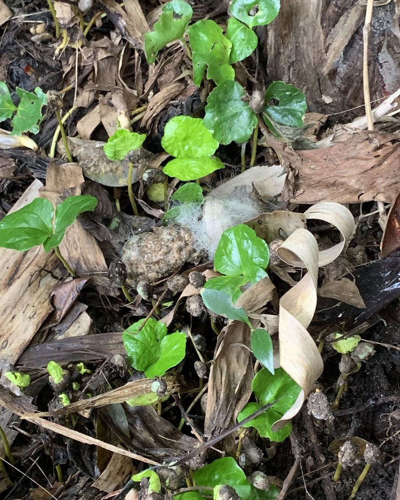

Les civettes sont au cœur du processus pour un café unique : leur bien-être est une réelle préoccupation pour nous.
À l'état sauvage, l'animal sait choisir les bonnes cerises de café, qui ne constituent qu'une petite partie de son régime alimentaire varié, alors qu'en captivité, la civette est nourrie de force et exclusivement avec des graines de café qui sont néfastes pour son système digestif.
Ce moyen de production annule tous les effets positifs que le processus enzymatique aurait pu avoir sur les fèves.
True Luwak n'a jamais et ne pourra jamais soutenir la maltraitance de civettes pour la production de notre café.
Nous veillons à ce que le café que nous produisons soit respectueux des animaux et de leur mode de vie naturel.
Notre café est certifié comme étant d'origine 100% sauvage car notre production respecte les civettes qui rendent le café Luwak si exceptionnel.

Nous pouvons vous garantir que notre café est d'origine 100% sauvage car nous nous fournissons uniquement là où la traçabilité de notre café ne fait aucun doute, pour nous comme pour vous.